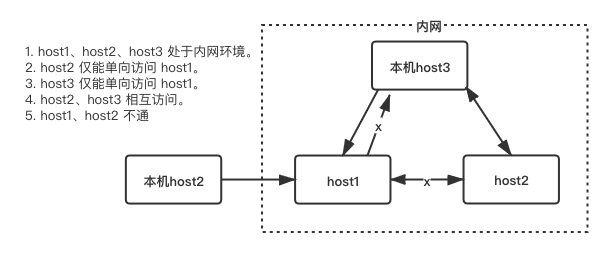

ssh key 登陆远程
目录
1 基础用法
在随意一台机器上，使用 ssh-kegen 命令生成一密钥对，私钥放在 client ~/.ssh/ 目录下。公钥追加在 server ~/.ssh/authorized_keys 文件中
1.1 生成 public_key 和 private_key
$ ssh-keygen -t rsa -C "shi_zhonghe@163.com"
会生成 2 个文件
$ tree ~/.ssh ~/.ssh ├── id_rsa └── id_rsa.pub
1.2 公钥拷贝到远程
拷贝公钥 id_ras.pub 内容，追加到 server 端 ~/.ssh/authorized_keys 文件中
1.3 修改本机的配置文件
修改本地主机 ~/.ssh/config 文件，添加如下类似内容：
# server 2
Host he
HostName www.langdebuqing.com
Port 2207
User root
IdentityFile ~/.ssh/id_rsa
1.4 使用
$ ssh he # 使用该命令即可登录（只有首次登陆时需要输入密码，以后则不需要） $ ssh root@langdebuqing.com -p 2107 -i /Users/he/.ssh/id_rsa # -i 是指定解密用的私钥 $ ssh root@langdebuqing.com -p 2107 -i /Users/he/.ssh/id_rsa 'ls -al' # 登陆远程，执行命令，然后退出登陆 $ ssh root@langdebuqing.com -p 2107 -i /Users/he/.ssh/id_rsa -t 'ls -al;zsh' # 登陆远程，使用伪终端，执行命令 $ scp -P2207 aa root@www.langdebuqing.com:/root/bb # 将 aa 拷贝到主机 www.langdebuqing.com/root/ 下，重命名为 bb $ scp -r test he:/root/ # scp 命令也支持 ssh key
1.5 其它
1.6 去除 private_key 私钥密码
$ ssh-keygen -f he.pem -p Enter old passphrase: Enter new passphrase (empty for no passphrase): Enter same passphrase again: Your identification has been saved with the new passphrase.
2 认证过程
- 私钥放在 client 上；公钥存放在 server 上，追加在文件 authorized_keys 中
- server 端接收到 client 的连接请求后，会在 authorized_keys 中匹配到 client 的公钥串，并生成随机数 r，用公钥对 r 进行加密得到pubKey(r)，然后将加密后信息发送给 client
- client 端通过私钥进行解密得到随机数 r，然后对随机数 r 和本次 session 的 SessionKey 利用 MD5 生成摘要 Digest1，发送给 server
- server 端会也会对 r 和 SessionKey 利用同样摘要算法生成 Digest2
- server 端会最后比较 Digest1 和 Digest2 是否相同，完成认证过程
3 使用跳板机登陆目标 server
目标 server 10.0.110.115
跳板机 45.40.61.11
private.pem 用于解密跳板机的私钥
private2.pem 用于解密目标 server 的私钥
-W %h:%p 会被填充为 -W 10.0.110.115:22
ProxyCommand 配置可改为 ProxyCommand ssh jp -W %h:%p
RemoteCommand 登陆远程主机后，在远程主机执行该命令
RequestTTY yes 等同于命令行中的 -t
$ ssh zeus@10.0.110.115 -i /Users/he/.ssh/private2.pem -p 22 -o ProxyCommand='ssh -i /Users/he/.ssh/private.pem -p 22 he@45.40.61.11 -W %h:%p'
~/.ssh/config 配置
Host jp
Hostname 45.40.61.11
Port 22
User he
IdentityFile ~/.ssh/private.pem
host test
HostName 10.0.110.115
Port 22
User zeus
IdentityFile /Users/he/.ssh/private2.pem
ProxyCommand ssh -i ~/.ssh/private.pem -p 22 he@45.40.61.11 -W %h:%p
RemoteCommand pwd;bash;
RequestTTY yes
4 ssh 隧道
4.1 ssh 隧道–本地端口转发
-N 表示关闭执行远程命令的功能，仅用于端口转发
-f 后台运行
-L 6000:10.0.110.115:22 本机创建一个套接字，监听 6000 端口。通过该套接字把收到的内容转发到目标 server 10.0.110.115:22。如果 -L 不和 -g 一起使用，默认只能本机 localhost 或 127.0.0.1 回环地址访问 6000 端口。格式：[-L [bind_address:]port:host:hostport]
-g 如果指定 -g，其它主机也可访问该机器的 6000 端口，会把其它主机的请求转发到目标 server 10.0.110.115:22
$ lsof -i:6000 $ ssh -N -f -L 6000:10.0.110.115:22 -i ~/.ssh/private.pem he@45.40.61.11 -p 22 # 构建一条本机到跳板机 45.40.61.11 的 ssh 隧道。本机 6000 端口发出的信息，会被隧道另一端跳板机 45.40.61.11:22 转发到目标 server 10.0.110.115:22 $ lsof -i:6000 COMMAND PID USER FD TYPE DEVICE SIZE/OFF NODE NAME ssh 48089 he 5u IPv6 0x3fe908dfdb388b63 0t0 TCP localhost:6000 (LISTEN) ssh 48089 he 6u IPv4 0x3fe908dfe282dcd3 0t0 TCP localhost:6000 (LISTEN) $ ssh -p 6000 zeus@localhost -i /Users/he/.ssh/private2.pem # 登陆目标 server。localhost:6000 会被转发到目标 server。zeus 为目标 server 用户名。未指定 -g，只能由 localhost 访问 6000 $ ssh -N -f -L 6600:10.0.110.115:3306 -i ~/.ssh/private.pem he@45.40.61.11 -p 22 $ mysql -h 127.0.0.1 -P 6600 -uuser -ppassward -Ddatasename # 使用 ssh 隧道登陆远程 mysql。使用 localhost 只能登陆到本机 mysql，使用 127.0.0.1 才会访问目标 server 的 mysql。暂时不知道原因。 $ ssh -N -f -g -L 6660:10.0.110.115:22 -i ~/.ssh/private.pem he@45.40.61.11 -p 22 # -g 示例 $ ssh -p 6660 zeus@192.168.3.8 -i /Users/he/.ssh/private2.pem # 192.168.3.8 为本机的 ip 地址。该命令在其它主机上执行。消息会被本机 192.168.3.8 转发到目标 server
4.2 ssh 隧道–远程端口转发
-R [bind_addr:]host1_port:host2_ip:host2_port host1_ip 在本机执行该命令。本机会请求 host1 上的 sshd 服务，在 host1 上建立一个套接字监听 host1_port 端口。host1 套接字收到的内容，会使用本机和 host1 之间构建的 ssh 隧道，转发到目标 server host2
远程端口转发表示的是将远程端口的数据转发到本地 IP:PORT

$ ssh -N -f -g -R 22333:host2:80 host1 # 在 host3 上执行该命令。
4.3 ssh 隧道–动态端口转发（SOCKS 代理）
相对于动态端口转发，本地端口转发和远程端口转发都是静态端口转发。所谓的 "静态" 是指应用程序服务器端的 IP 地址和监听的端口是固定的。试想另外一类应用场景：设置浏览器通过端口转发访问不同网络中的网站。这类应用的特点是目标服务器的 IP 和端口是未知的并且总是在变化，创建端口转发时不可能知道这些信息。只有在发送 HTTP 请求时才能确定目标服务器的 IP 和端口。在这种场景下静态端口转发的方式是搞不定的，因而需要一种专门的端口转发方式支持即 "动态端口转发"。SSH 动态端口转发是通过 Socks 协议实现的，创建动态端口转发时 SSH 服务器扮演一个 Socks 代理服务器，所以这种转发方式也叫 Socks 转发
-D [bind_addr:]port remote 在本机监听 port 端口，把收到的信息发给隧道的另一端 remote，然后 remote 和目标站点进行通信
$ ssh -N -f -g -D 6667 -i ~/.ssh/id_rsa user@host1 -p 22 # 监听本机 6667 端口，把收到的信息发给隧道的另一端 host1，然后由 host1 和目标站点进行通信
然后在浏览器 SOCKS 代理中，填上本机的 ip 和 6667 端口。这样浏览器就可以使用 SOCKS 代理进行联网了。
4.4 隧道安全性和使用场景
在构建的隧道中传输数据是经过公钥加密的，所以在隧道中传输数据是安全的。但是，通过隧道尾端转发数据是无公钥加密的，所以使用 ssh 隧道的目的并不是提升数据的安全性。
有时使用隧道是为了绕开防火墙。例如：serverA-serverB 互通，serverA-serverC 被防火墙阻断了，serverB-serverC 互通。serverA 访问 serverC，可以在 serverA-serverB 之间构建一个 ssh 隧道。通过 serverB 访问 serverC